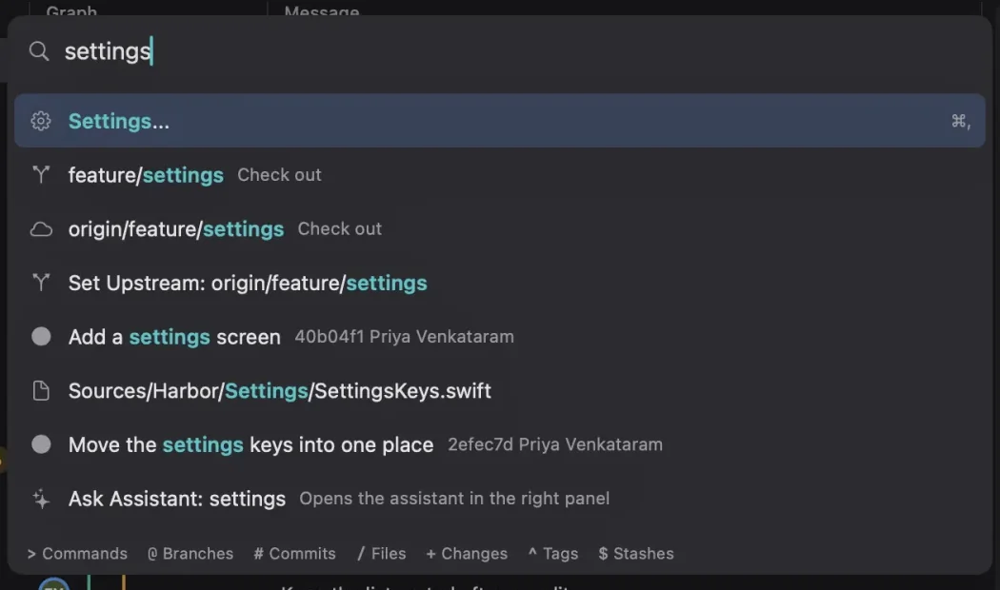

GuideUse
Keyboard shortcuts
The keys you use most. All of them are under ⌘/ in the app.
Quick Open#
Press ⌘P and type to find branches, commits, files and commands at once. Press ↩ on a row to check it out or open it.

Start with a symbol to look for one kind only.
| Symbol | Finds | Example |
|---|---|---|
> | Commands | >push |
@ | Branches | @feature/ |
# | Commits | #tokenizer |
/ | Files | /NoteStore |
+ | Changed files | +README |
^ | Tags | ^v1.0 |
$ | Stashes | $shorter |
Keys you use most#
| Action | Keys |
|---|---|
| Command palette | ⇧⌘P |
| Quick open: repositories, branches, commits, files | ⌘P |
| Add repository / Clone | ⌘O / ⇧⌘O |
| Fetch / Pull / Push | ⇧⌘F / ⇧⌘L / ⇧⌘K |
| New branch / Switch branch | ⌘B / ⇧⌘B |
| Undo / Redo | ⌘Z / ⇧⌘Z |
| Stash / Pop latest stash | ⌥⌘S / ⇧⌥⌘S |
| Left panel / Right panel | ⌘J / ⌘K |
| Ask the assistant | ⇧⌘I |
| Git console | ⇧⌘C |
| Refresh | ⌘R |
| All shortcuts | ⌘/ |